시각디자인기사 (2018-04-28 기출문제)
1과목: 시각디자인론
1. 브레인스토밍에 관한 설명이 틀린 것은?
- 문제를 정확하게 파악한다.
- 브레인스토밍 그룹을 결정한다.
- 모임에서는 아이디어가 떠로은 사람이 손을 들고 아이디어를 제출한다.
- 참가자들은 플립차트에 쓰여 있는 모든 기술문을 검토해보고 더 실용적인 적용방안을 토의한다.
(정답률: 88%)

2. 편집디자인의 레이아웃 요소가 아닌 것은?
- ling-up
- Saturation
- Format
- Margin
(정답률: 84%)
3. 소비자의 신제품 수용단계를 순서대로 나열한 것은?
- 인지 → 관심 → 평가 → 시용 → 수용
- 관심 → 인지 → 평가 → 시용 → 수용
- 관심 → 인지 → 시용 → 수용 → 평가
- 인지 → 관심 → 수용 → 시용 → 평가
(정답률: 55%)
4. 1920년 전후 프랑스의 순수주의에 대한 설명으로 틀린 것은?
- 형태를 과학적으로 구성하였다.
- 색채를 과학적으로 구성하였다.
- 간결한 건축적 미를 추구하였다.
- 실생활 보다는 사치용도의 공예품만을 디자인하였다.
(정답률: 91%)
5. 다음 중 디자인보호법에 의해 보호 받을 수 없는 것은?
- 조립식 주택
- 새로 출시될 초코렛 포장지
- 국기, 국장, 군기, 훈장, 포장, 기장, 그 밖의 공공기관 등의 표장
- 가로등
(정답률: 63%)
6. IDEA 발상법 중 KJ 발상법의 내용이 아닌 것은?
- 사실 관찰결과 생각한 것 등을 노트에 모두 기록한다.
- 각 정보마다 그 내용을 단문화 하고, 가급적 한 줄로 표현하여 정보의 내용이 눈에 쉽게 들어오도록 한다.
- 소그룹으로 모인 내용을 다시 분류하여 그 내용을 나타내는 단문카드를 작성한다.
- 1971년 영국의 토니 부잔(Tony Buzan)에 의해 창시된 이래 세계적인 두뇌관련 석학들로부터 찬사를 받아온 학습이론이다.
(정답률: 42%)
7. 아래 그림은 상표법상 어느 상표의 개념에 해당하는가?
- 업무표장
- 서비스표
- 증명표장
- 지리적 표시 단체표장
(정답률: 84%)
8. 기업 내에 축적되어 있는 무형자산으로 분류되지 않는 것은?
- 브랜드
- 기업이미지
- 디자인
- 생산시설
(정답률: 95%)
9. 상표등록에 대한 설명으로 틀린 것은?
- 선원주의를 원칙으로 한다.
- 한번 등록된 상표는 매년 갱신하여야 한다.
- 부정경쟁 방지와 고유가치를 보호하기 위한 제도이다.
- 상표의 권리 확립과 보호를 위해 신속하게 등록하여야 한다.
(정답률: 100%)
10. 아르누보에 관한 설명으로 틀린 것은?
- 자연물의 유기적 형태로부터 모티브를 찾아 양식화 하였다.
- 비대칭적이고 생동적인 곡선을 주로 사용하였다.
- 대량생산을 위한 합리적이고 기능적인 양식이다.
- 1890년대 일어났던 신 미술 운동으로서 과거의 양식에서 벗어나 새로운 양식을 탐색했던 장식 미술 운동이다.
(정답률: 90%)
11. 아이디어 시각화 과정 중 머릿속에 있는 아이디어를 시각화하는 첫번째 단계는?
- 시안
- 콘셉트
- 시장조사
- 섬네일 스케치
(정답률: 89%)
12. 커뮤니케이션에 있어 설득적 기능의 매체는?
- 신호, 화살표, 문자
- 포스터, 신문광고, 다이렉트 메일
- 심벌마크, 패턴, 일러스트레이션
- 사진, 회화, 영화
(정답률: 86%)
13. 멀티미디어 프로젝트 기획 진행 순서가 가장 보편적이고 합리적인 것은?
- 아이템 선정 → 시장조사 → 개발전략수립 → 개발일정, 예산결정 →마케팅전략검토 → 기획서화(발표)
- 시장조사 → 마케팅전략검토 → 개발일정, 예산결정 → 아이템선정 → 개발전략 수립 → 기획서화(발표)
- 개발전략수립 → 개발일정, 예산결정 →마케팅전략검토 → 아이템선정 → 시장조사 → 기획서화(발표)
- 개발전략 수립 → 마케팅전략검토 → 시장조사 → 아이템 선정 → 개발일정, 예산결정 → 기획서화(발표)
(정답률: 79%)
14. 넓은 의미와 상표출원이 아닌 것은?
- 증명표장 출원
- 단체표장 출원
- 업무표장 출원
- 상장 출원
(정답률: 59%)
15. 광고디자인에 있어서의 티저(teaser)기법이란?
- 호기심과 궁금증을 유발시키면서 놀리듯이 하나씩 하나씩 메시지를 전달하는 기법
- 언어유희적인 발상법으로 시각적 즐거움을 유도하는 방법
- 누구나 알고 있는 예술적 대상을 타용하는 기법
- 타이포그래피(typography)적인 기법 전체적으로 일컫는 용어
(정답률: 98%)
16. 가독성을 높이기 위한 타이포그래피의 스페이싱(spacing)에서 고려대상이 아닌 것은?
- 자간
- 색상균형
- 띄어쓰기
- 행간
(정답률: 89%)
17. 모니터의 색상과 인쇄된 색상차이를 줄이는 작업은?
- 하프톤(Halfton)
- 스캐팅(Scanning)
- 캘리브레이션(Calibration)
- 세퍼레이션 셋업(Separation Setup)
(정답률: 73%)
18. 디자이너의 사회적 역할 중 맞지 않는 것은?
- 소비자 욕구충족
- 의식수준 향상
- 예술과 기술의 조화
- 예술적 특권 확보
(정답률: 90%)
19. IDEA 발상법과 그 관계된 내용이 바르게 연결된 것은?
- 고든법: 광고, 카탈로그, 참고자료 등을 보며 아이디어를 발상한다.
- 강제결부법: 모든 결점사항을 분석한 다음, 구체적인 아이디어를 내놓는 방법이다.
- 스테판 버이커법: 고정관념을 제거하게 되므로 '사고의 구속을 제거하게 되므로 '사고의 구속을 제거하는 발상'이라고 한다.
- 속성연결법: 어떤 대상의 전체나 각 부분들에 대해 그 대표적인 성질이나 특성을 기술하고 그것을 개선, 변형, 대치하는 발상 방법이다.
(정답률: 62%)
20. 자연적 기호 즉, 연기를 보고 불을 연상하는 것을 이용하는 것으로 소리, 색깔, 빛, 모양 등의 일정한 부호를 사용하여 통신하는 것은?
- Signal
- Sign
- Symbol
- Mark
(정답률: 57%)
2과목: 조형심리학
21. 다음 중 균형에 대한 설명이 아닌 것은?
- 상하, 좌우 비대칭에서 얻는 형태상의 시각적, 정신적 안정감을 뜻한다.
- 대칭은 균형에서 가장 정형의 구성 형식이며, 가장 일반적으로 균형이 잡힌 상태이다.
- 균형이 무시되었을 때, 시각적 감정은 경쾌하고 동적인 느낌을 받는다.
- 균형은 질서와 안정, 통일감을 느끼게 하는 디자인 원리다.
(정답률: 45%)
22. 아래 그림에 해당하는 투상법은?
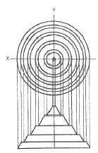
- 표고투상
- 사투상
- 부등각축측투상
- 정투상
(정답률: 49%)
23. 게슈탈트 심리학의 지각체계화의 원리가 아닌 것은?
- 근접성의 원리
- 폐쇄성의 원리
- 연속성의 원리
- 깊이성의 원리
(정답률: 81%)
24. 다음 ( )안에 순서대로 들어갈 내용은?
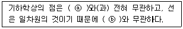
- ⓐ: 크기 ⓑ: 부피
- ⓐ: 크기 ⓑ: 두께
- ⓐ: 무게 ⓑ: 입체
- ⓐ: 색상 ⓑ: 크기
(정답률: 61%)
25. 바탕과 도형을 구분하는 일반적 조건 중 틀린 것은?
- 작은 것이 큰 것보다 도형이 되기 쉽다.
- 두 개의 영역이 같은 외곽선을 가지고 있을 때 모양을 가진 것처럼 보이는 것이 도형이고 다른 하나는 바탕이다.
- 폐쇄된 형이 도형이 되기 쉽다.
- 대칭적인 것보다 비대칭의 것이 도형이 되기 쉽다.
(정답률: 71%)
26. 게슈탈트의 그루핑 법칙과 관련한 형태지각의 관한 설명이 틀린 것은?
- 서로 가까이 있는 요소들은 하나로 뭉쳐져 보인다.
- 비슷한 성질을 가진 요소는 떨어져 있어도 덩어리져 보인다.
- 테두리 선으로 완전하게 연결되어야만 도형으로 인식된다.
- 비슷한 움직임을 지닌 것은 하나로 지각된다.
(정답률: 84%)
27. 바탕에 대해 도형이 되기 쉬운 조건에 해당하지 않는 것은?
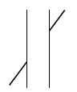
- 분트의 착시
- 뮬러리어의 착시
- 포겐도르프의 착시
- 폰조의 착시
(정답률: 37%)
28. 표제란에 대한 설명으로 틀린 것은?
- 형식은 각기 다르지만, 일반적으로 우측하단의 윤곽선에 붙여서 그린다.
- 도명은 도면에 표시한 물품의 명칭을 기입한다.
- 척도는 배척인 경우 1:2 또는 1/2의 표기법으로 기입한다.
- 도형의 치수에 비례하지 않는 경우에는 "비례척이 아님(NS)"으로 기입한다.
(정답률: 40%)
29. 전항에 전전항을 더하여 가는 수열로서 황금비를 설명하는 수열은?
- 조화수열
- 등비수열
- 피보나치수열
- 펠의수열
(정답률: 83%)
30. 보편적인 미(美)의식은 어떠한 인식에 근거를 두고 있다고 보는가?
- 감성적 인식
- 이성적 인식
- 오성적 인식
- 내성적 인식
(정답률: 84%)
31. 가장 단순하고 간결하며 차가운 운동성을 나타내는 선은?
- 수평선
- 기하학적인 곡선
- 수직선
- 자유로운 곡선
(정답률: 61%)
32. 다음 중 인간을 둘러싼 환경을 창출의 원인과 형태, 성격에 따라 나눈 것에 포함되지 않은 것은?
- 자연계
- 조형계
- 사회계
- 인류계
(정답률: 52%)
33. 달리는 차안에서 바라보는 가로수가 관찰자의 이동과는 무관하게 변함없이 서 있음을 알게 하는 지각원리는?
- 크기 항상성
- 모양 항상성
- 색채 항상성
- 위치 항상성
(정답률: 95%)
34. 아래 그림과 같은 타원의 작도 방법은?
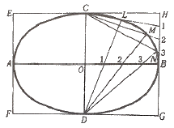
- 실은 이용한 타원그리기
- 집점법을 이용한 타원그리기
- 태.소부원법을 이용한 타원그리기
- 평행사변형법을 이용한 타원그리기
(정답률: 55%)
35. 시간에 따라 변하는 달의 모양과 같은 자연현상과 관련이 깊은 조형의 원리는?
- 통일(Unity)
- 점이(Gradation)
- 균형(Balance)
- 대조(Contrast)
(정답률: 95%)
36. 조형예술 측면에서 최초의 요소로 규정지을 수 있고, 기하학 측면에서 위치를 결정하는 것은?
- 점
- 선
- 면
- 입체
(정답률: 93%)
37. 차이가 분명한 사물을 보편적인 사물보다 더 잘 기억하는 현상을 무엇이라 하는가?
- 위협의 감지
- 폰 레스토프 효과
- 기대 효과
- 삼등분의 법칙
(정답률: 85%)
38. 거리에 따라 다르게 지각되는 질감과 관련이 없는 것은?
- 그림자
- 조명의 강도
- 방향
- 굴절
(정답률: 43%)
39. 수를 기초로 한 조화의 미로서, 조형예술의 창작원리로 활용되고 있는 것은?
- 통일
- 강조
- 비례
- 요소
(정답률: 80%)
40. 시인성에 관한 설명이 아닌 것은?
- 시인성은 전경과 배경의 명도대비에 의존한다.
- 시인성은 조명의 질과 양에 영향을 받는다.
- 색채마다 고유한 시인성이 있다.
- 색채의 시인성은 어떤 배경 하에서도 변하지 않는다.
(정답률: 95%)
3과목: 광고학
41. 인간이 제품이나 서비스를 사용하면서 상호간 작용하는 것을 용이하게 하는 디자인분야는?
- 가상현실
- 다이나믹스
- 인터랙티브
- 넛지 디자인
(정답률: 75%)
42. 하루 중 가장 시청률이 높은 시간대를 지칭하는 것은?
- Real Time
- Prime Time
- Fringe Time
- Target Time
(정답률: 75%)
43. 매스 커뮤니케이션의 사회적 기능 중 틀린 것은?
- 환경감시기능
- 소수취향의 기능
- 상관조정기능
- 오락기능
(정답률: 70%)
44. 마케팅 전략수립 과정에서 일반적으로 가장 먼저 실시하는 것은?
- 전략 수립
- 환경 분석
- 전략 실행
- 평가와 통제
(정답률: 88%)
45. 다음의 광고 매체 중 메시지 전달에서 신속성이 가장 뛰어난 것은?
- 라디오
- 신문
- 영화
- 잡지
(정답률: 86%)
46. 프랑크푸르트 학파의 미디어론은 자본주의 사회에 대한 문화비평의 일환으로 설명된다. 프랑크푸르트 학파의 대표적인 학자는?
- 고프만(E.Goffman)
- 알튀세르(L.Althusser)
- 아도르노(T.W.Adorno)
- 보드리야르(J.Baudrillard)
(정답률: 50%)
47. 그림에서 ( )안에 알맞은 것은?
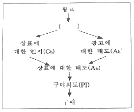
- 판매
- 중개
- 선전
- 지각
(정답률: 62%)
48. 다음 중 ( )안에 적합한 용어는?
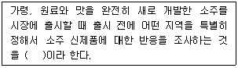
- 디마케팅(Demarketing)
- 바이럴마케팅(Viral marketing)
- 노이즈마케팅(Noise marketing)
- 테스트마케팅(Test marketing)
(정답률: 82%)
49. 광고(Advertising)의 어원과 관계없는 것은?
- Advertising에서 유래되었다.
- Addition에서 유래되었다.
- Reclame이라고 쓰이기도 한다.
- Clamo에서 유래하였다.
(정답률: 53%)
50. 니치 마케팅(Niche marketing) 이란?
- 대다수의 기업이 못보고 넘기거나 무시했던 틈새시장을 표적으로 하여 행하는 마케팅
- 영리를 목적으로 하지 않고 공공의 이익을 목적으로 행하는 마케팅
- 공포심, 수치심, 죄의식 등 부정적 내용을 강조하여 소비자를 설득하기 위해 행하는 마케팅
- 언어나 문자를 사용하지 않고 신체언어, 언어표정, 눈 접촉, 몸짓 등의 비언어적인 행위로 메시지를 전달하는 마케팅
(정답률: 76%)
51. 그린 컨슈머(Green Consumer)의 설명으로 틀린 것은?
- 환경 문제에 대한 관심과 책임감을 가지고 환경보전을 이룩하려는 소비자
- 환경 문제를 발생시키는 기업의 제품 구매를 거부하는 소비자
- 유가공 식품을 거부하고 식물성 식품만 구매하는 소비자
- 상품의 소비를 감소시키기 위하여 근검한 소비 생활을 하는 소비자
(정답률: 58%)
52. SWOT 분석에서 "S"는 무엇을 의미하는가?
- 목표
- 효력
- 견해
- 강점
(정답률: 84%)
53. 다음은 FCB 그리드 모형에서 분류한 4개 영역과 그 영역에 적합한 대표적 상품 유형의 결합이다. 보기 중 그 연결이 잘못된 것은?
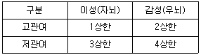
- 1상한 - 집, 자동차
- 2상한 - 보석, 의상
- 3상한 - 화장품, 모터사이클
- 4상한 - 담배, 음료
(정답률: 79%)
54. 다음 중 TV에서 사용되는 화면의 특수기법인 크로마키(chroma key)기법에서 배경으로 사용하는 색은?
- 흰색
- 붉은색
- 노란색
- 청색
(정답률: 85%)
55. 브랜드 호감도를 높이기 위한 광고메시지로 가장 바람직한 것은?
- 제품의 기능설명이 강조된 광고메시지
- 제품의 제원이 노출된 광고메시지
- 제품의 가격정보가 강조된 광고메시지
- 제품의 소비자혜택이 강조된 광고메시지
(정답률: 73%)
56. 광고, 홍보 등은 마케팅믹스의 4P요소 중 어디에 해당되는가?
- 가격(price)
- 유통(place)
- 제품(product)
- 촉진(promotion)
(정답률: 81%)
57. 광고기획에 필요한 시장조사, 제품조사, 소비자조사 등 광고활동 전반에 걸쳐 필요한 조사를 시행하는 사람을 뜻하는 것은?
- 리서처
- 이벤트 프로듀서
- PR 커뮤니케이션
- 캐스팅 디렉터
(정답률: 86%)
58. 커뮤니케이션의 대표적인 3가지 관점 중 아래에서 설명하는 것은?
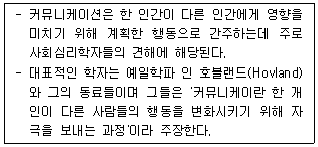
- 기능적 관점
- 구조적 관점
- 의도적 관점
- 조망적 관점
(정답률: 75%)
59. 구매시점 광고로 소매점의 점두 또는 점내에서 행하는 광고는?
- 직접우송 광고
- 시네마 광고
- POP 광고
- 공중 광고
(정답률: 87%)
60. 특정상황 CM에서 제품과 상표선택에 따라 인지된 관련성 및 개인적 중요성의 정도를 말하는 개념은?
- 태도
- 수용범위
- 관여도
- 구매의사
(정답률: 64%)
4과목: 색채학
61. 낮에 빨간 물체가 날이 저물어 어두워지면 어둡게 보이고, 또 낮에 파랗게 보이는 물체는 밝게 보이는 것은 무엇 때문인가?
- 연색성
- 메타메리즘
- 푸르킨예 현상
- 색각항상
(정답률: 86%)
62. 같은 색의 물체를 동일한 광원에서 보더라도 면이 크기가 변하면 색이 다르게 보일 수 있는 것은?
- 면적 효과
- 색상 대비
- 연변 대비
- 메타메리즘
(정답률: 87%)
63. 먼셀 색체계에 관한 설명 중 틀린 것은?
- 모든 색상의 채도 위치가 같아 배색이 용이하다.
- 색상, 명도, 채도의 3속성을 기호로 한 3차원 체계이다.
- 먼셀 색상은 R, Y, G, B, P를 기본색으로 한다.
- 한국산업표준으로 제정되고 교육용으로 제정된 색체계이다.
(정답률: 66%)
64. 다음 중 색의 시인성을 높이기 위한 가장 좋은 방법은?
- 난색보다는 한색을 선택한다.
- 배경색과 명도차를 동일하게 한다.
- 흰색바탕의 빨강색을 흰색바탕의 보라색으로 바꾼다.
- 바탕색에 비하여 명도와 채도 차이를 크게 한다.
(정답률: 92%)
65. 먼셀 기호로 표시할 때 5R 4/10 이라고 표기한 색에 대한 설명이 틀린 것은?
- 색상은 5R이다.
- 명도는 4이다.
- 채도는 4/10이다.
- 5R 4의 10이라고 읽는다.
(정답률: 75%)
66. 색과 색의 상징이 잘못 연결된 것은?
- 빨강 - 정열, 사랑
- 노랑 - 신앙, 소박
- 파랑 - 젊음, 성실
- 초록 - 희망, 휴식
(정답률: 95%)
67. 수송 기관의 대표적인 시내버스, 지하철, 기차 등의 색채 설계 방법으로 적합하지 않는 것은?
- 도장 공정이 간단할수록 좋다.
- 조색이 용이할수록 좋다.
- 변색, 퇴색하지 않는 도료가 좋다.
- 특수한 도료로 어렵게 구입되는 색료가 좋다.
(정답률: 95%)
68. 다음 중 감산혼합에 대한 설명 중 틀린 것은?
- 원색인 시안과 마젠타를 섞으면 2차색은 파랑색이 된다.
- 그 예로 인쇄 출력물 등이 있다.
- 2차색들은 색광혼합의 3원색과 동일하다.
- 2차색들은 명도는 낮아지고 채도가 높아진다.
(정답률: 59%)
69. 디지털 이미지의 특징 중 해상도(resolution)에 대한 설명으로 잘못된 것은?
- 동일한 해상도에서 큰 모니터가 더 선명하고, 작은 모니터일수록 선명도가 떨어진다.
- 하나의 이미지 안에 몇 개의 픽셀을 포함하는가에 대한 척도 단위로는 dpi를 사용한다.
- 해상도는 픽셀들의 집합으로 한 시스템내에서 픽셀의 개수는 정해져 있다.
- 해상도는 디스플레이 모니터 안에 있는 픽셀의 숫자로 가로방향과 세로방향의 픽셀의 개수를 곱하면 된다.
(정답률: 79%)
70. 다음이 설명하는 색채조화론은?
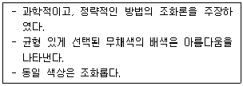
- 오스트발트
- 비렌
- 문,스펜서
- 먼셀
(정답률: 67%)
71. 다음 중 Lab 색 모델 설명으로 틀린 것은?
- 균일 색 모델(uniform color model)이다.
- L은 밝기, a와 b는 색도 성분에 해당한다.
- 균일 색 모델에는 Lab, Luv 등의 모델이 존재한다.
- green에서 magenta 사이의 색 단계는 b축이다.
(정답률: 62%)
72. 어떤 색이 같은 색상의 선명한 색 위에 위치하면 원래의 색보다 훨씬 탁한 색으로 보이고 무채색 위에 위치하면 원래의 색보다 맑은 색으로 보이는 대비현상은?
- 명도대비
- 채도대비
- 색상대비
- 연변대비
(정답률: 72%)
73. 관용색명 '베이비핑크'와 관련이 없는 것은?
- 흐린 분홍
- 5R 8/4
- 7Y 8.5/4
- baby pink
(정답률: 92%)
74. 채도에 따른 색의 구분을 할 때 명도는 높고 채도가 낮은 색은?
- 청색
- 명청색
- 암청색
- 탁색
(정답률: 61%)
75. 저드(D.B.Judd)의 색채조화론과 관련이 없는 것은?
- 질서의 원리
- 모호성의 원리
- 유사성의 원리
- 친근감의 원리
(정답률: 56%)
76. 오스트발트 색체계의 색상에 대한 설명이 틀린 것은?
- 24색상환으로 1~24로 표기한다.
- 색상은 헤링의 4원색을 기본으로 한다.
- Red의 보색은 Sea Green이다.
- Red는 1R~3R로, 색상번호는 1~3에 해당된다.
(정답률: 55%)
77. 다음 색채배색 중 단맛으로 느낌을 수반하는 배색은?
- 빨강, 핑크
- 브라운, 올리브
- 파랑, 갈색
- 초록, 회색
(정답률: 63%)
78. 색채조화에 관한 설명 중 틀린 것은?
- 동일, 유사조화는 강렬한 느낌을 준다.
- 보색배색은 색상대비가 크다.
- 대비조화는 동적인 느낌을 준다.
- 배색된 색채들의 상태와 속성이 서로 반대되면서도 모호한 점이 없을 때 조화된다.
(정답률: 80%)
79. 가시광선은 파장 380~780nm의 전자파를 말하는데 380nm 이하의 파장을 갖고 있으면서 화학작용 및 살균작용을 하는 전자파는?
- 적외선
- 자외선
- 휘선
- 흑선
(정답률: 62%)
80. 바나나의 색이 노랗게 보이는 이유는?
- 다른 색은 흡수하고, 노란 색광만 반사하기 때문
- 다른 색은 반사하고, 노란 색광만 흡수하기 때문
- 다른 색은 굴절하고, 노란 색광만 투과하기 때문
- 다른 색은 반사하고, 노란 색광만 투과하기 때문
(정답률: 86%)
5과목: 사진 및 인쇄제판론
81. 화상농담을 풍부하게 연속적으로 재현시킬 수 있으며 지폐같은 유가증권 발행에 주로 이용되는 인쇄방식은?
- 플렉소 인쇄
- 오프셋 인쇄
- 그라비어 인쇄
- 스크린 인쇄
(정답률: 68%)
82. 다음 금속 중 친유성이 강하고 그라비어 인쇄의 판재로 주로 사용되는 금속은?
- 아연(Zn)
- 마그네슘(Mg)
- 구리(Cu)
- 알루미늄(Al)
(정답률: 50%)
83. 현상할 때 미노출 부분의 포그(fog)현상을 방지하기 위하여 첨가하는 물질은?
- 현상촉진제
- 보항제
- 억제제
- 현상주약
(정답률: 58%)
84. 인쇄방식 중 제판법이 간단하고 압력을 가장 적게 주는 인쇄방식은?
- 플렉소 인쇄
- 그라비어 인쇄
- 오프셋 인쇄
- 스크린 인쇄
(정답률: 58%)
85. 책의 속장을 실이나 철사로 매지 않고 책등 부분을 강력한 접착제로 접착시켜 굳힌 다음, 표지를 싸고 속장과 표지를 함께 재단하여 완성시키는 제책 방식은?
- 양장
- 호부장
- 중철
- 무선철
(정답률: 52%)
86. 다음 괄호 안에 들어갈 알맞은 빛의 성질은?
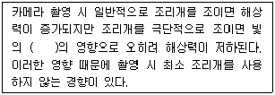
- 간섭
- 회절
- 편광
- 조도
(정답률: 69%)
87. 피사체를 올려다보는 카메라의 각도를 말하며 건물의 장엄함이나 신체를 길어 보이게 하는 효과를 주는 카메라 앵글은?
- 양각(low angle)
- 부감(high angle)
- 대향 위치
- 클로즈업
(정답률: 72%)
88. 어항 속의 물고기는 쇼윈도우 안의 마네킹을 촬영할 때 표면 반사광선을 제거할 목적으로 사용하는 필터는?
- PL
- ND
- UV
- FL
(정답률: 49%)
89. 흑백 네거티브 필름의 유제층을 저감도 유제층과 고감도 유제층으로 나누는 가장 궁극적인 이유는?
- 콘트라스트를 높이기 위하여
- 해상력을 높이기 위하여
- 관용도를 높이기 위하여
- 입상성을 높이기 위하여
(정답률: 23%)
90. C, M, Y 각 색의 밑 색을 제거하여 Bk 색으로 바꾸기 위한 목적으로 사용하는 것은?
- UCA
- UCR
- 계조수정
- USM
(정답률: 46%)
91. 다음 조리개 중 피사계 심도가 가장 깊은 것은?
- f/22
- f/8
- f/4
- f/2.2
(정답률: 61%)
92. 다음 괄호 안에 들어갈 알맞은 용어는?
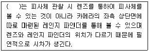
- 일안반사식 카메라
- 거리계연동식 카메라
- 스테레오 카메라
- 인스턴트 카메라
(정답률: 42%)
93. 오프셋 인쇄에 사용되는 PS판(Pre-Sensitized plate)의 특징이 아닌 것은?
- 제판 처리가 간단하고 신속히 된다.
- 암반응이 적어 사용 유효기간이 짧다.
- 온, 습도의 영향을 거의 받지 않는다.
- 재현성이 우수하며 해상력이 좋다.
(정답률: 72%)
94. 카메라를 사용하지 않고, 감광재료에 직접 물체의 형태를 표현할 수 있는 사진기법은?
- 바스 릴리프
- 네거티브 포토
- 포토그램
- 포스터리제이션
(정답률: 52%)
95. 노출의 과부족 또는 현상부족으로 콘트라스트가 약해진 네거티브를 인화하는데 사용할 수 있는 가장 적합한 필터의 호수는?
- 0호
- 2호
- 3호
- 5호
(정답률: 50%)
96. 4×5" 뷰 카메라(View Camera)로 촬영을 할 때 수직면의 왜곡을 보정하기 위한 무브먼트는?
- Rise
- Fall
- Tilt
- Swing
(정답률: 66%)
97. 피사계 심도에 대한 설명 중 틀린 것은?
- 렌즈의 초점거리가 길수록 심도가 얕아진다.
- 렌즈가 피사체에 가까워질수록 심도가 얕아진다.
- 조리개가 조일수록 심도가 깊어진다.
- 과초점 거리와 피사계 심도는 무관하다.
(정답률: 77%)
98. 인쇄의 5요소 중 화선부를 눈에 보이도록 하여 화선부와 비화선부의 차이를 나타나게 하는 것은?
- 원고(copy)
- 색재(ink)
- 피인쇄체(paper)
- 인쇄판(printing plate)
(정답률: 49%)
99. 고무와 같이 외력을 가하면 변형하고, 제거하면 본래의 형태로 되돌아가는 성질은?
- 탄성
- 소성
- 점성
- 연화성
(정답률: 80%)
100. 스크린 잉크용 안료의 필요특성이 아닌 것은?
- 입자가 굵어야 한다.
- 착색력이 강해야 한다.
- 작용성이 좋은 것을 사용해야 한다.
- 비이클 및 보조제와 혼합이 잘되어야 한다.
(정답률: 77%)